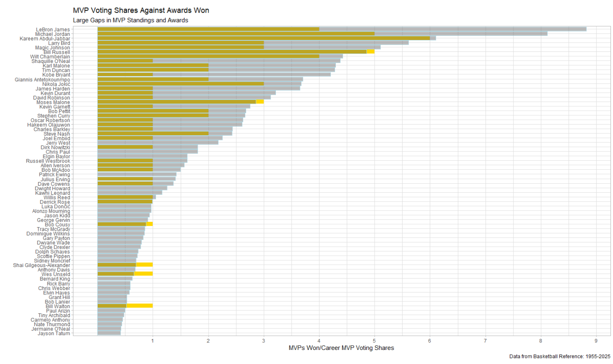
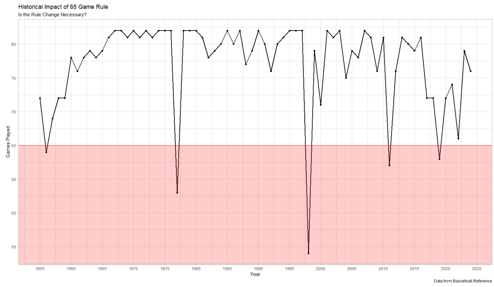
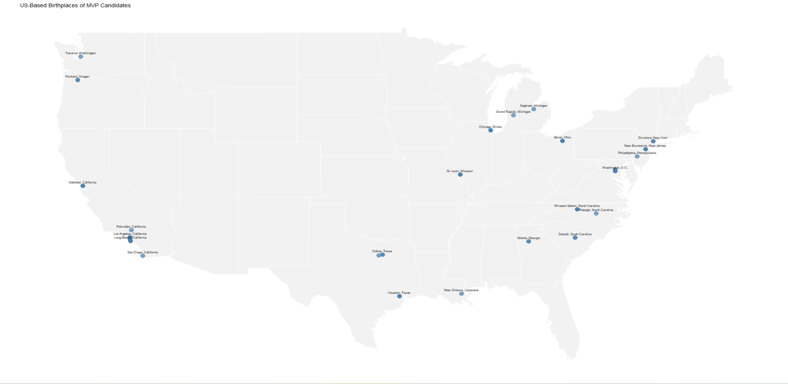
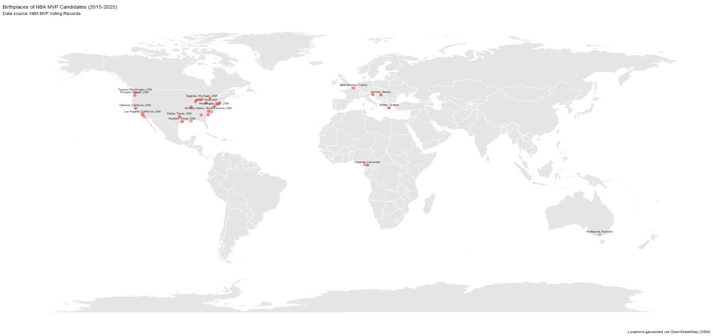
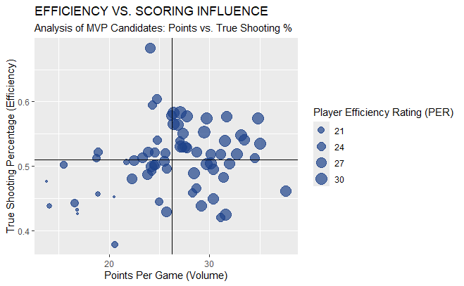
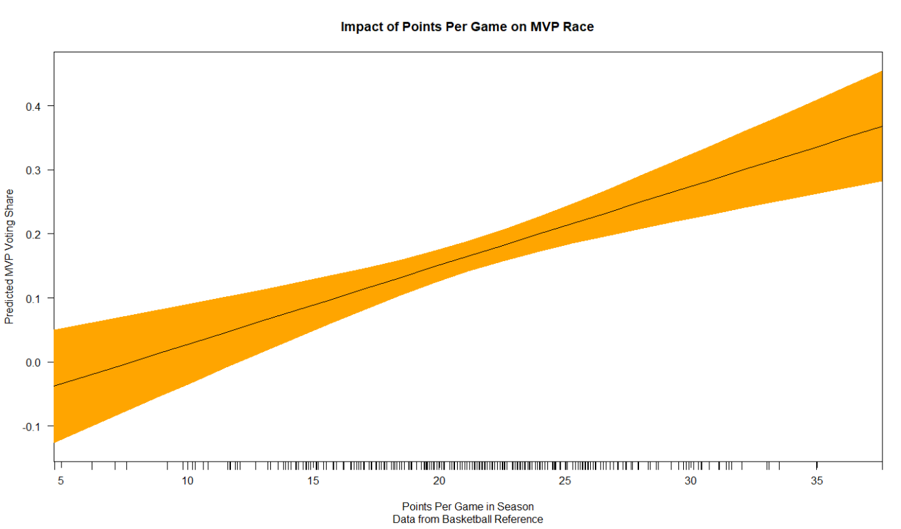
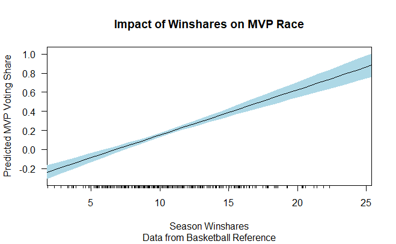

Synthesizing the modern MVP requires analyzing performance metrics against increasing voter standards. While points per game (PPG) remain a basic requirement, true MVP synthesis in 2026 relies on combining advanced efficiency ratings like Player Efficiency Rating (PER) and Win Shares with traditional statistics.
In this study, we break down historical voting data from 1956-2025 to identify the Optimal MVP Profile. We analyze how factors like points per game, player durability (Games Played), and advanced metrics (PER, WS/48) are reflected in the selection process. It is important to note that from 1956-1980, players voted for the MVP and were not allowed to vote for their teammates. After that, the voting process changed to a panel of sportswriters and broadcasters, which has influenced the criteria for selection. By synthesizing these data points, we aim to predict the 2026 MVP and understand how the evolving landscape of basketball has shaped the award's criteria.
Historical Context & The Evolution of Greatness
The Gap: MVP Voting Shares vs. Trophies Won

Career MVP Award Shares (Gray) vs. Actual MVPs Won (Gold) | Data: 1955-2025
This visualization highlights the discrepancy between consistent elite performance (Voting Shares) and recognized success (Awards Won).
Notice the significant gray tails for players like Jerry West or Chris Paul, elite candidates who maintained MVP-level production for a decade without the award to show for it. One can easily see how the voting process, influenced by narratives and team success, has historically favored certain players while overlooking others who were consistently excellent but never quite the best in a given season.

Games Played by MVP Winners Over Time.
The 65-Game Requirement
While historical greats (1965-1995) almost exclusively stayed well above the 65-game mark, the modern era shows a jagged descent. This showcases the changing ideas surrounding player health and the increasing prevalence of load management strategies.
It appears that the new 65 game requirement for awards was in fact necessary. As teams increasingly focus on keeping players healthy for the playoffs, fans and voters see less and less of them making their candidacy less concrete in the regular season than in the past. This also showcases the constantly changing standards for what it takes to be a great player. Even when competing for a championship, a player should be able to maintain that high level performance for both the regular season and playoffs.
The Geographic Distribution of Excellence
We analyze the geographic distribution of MVP performance. For over 60 years, the MVP award was largely a domestic affair. The clustering near major metropolitan areas illustrates how proximity to top-tier scouting and elite high school programs served as the traditional gateway to the MVP trophy. As of 2026, international players have secured seven consecutive MVP awards. This map represents a fundamental shift in the growth of basketball on an international scale.


Geographic Distribution of MVP Performance Success
The Synthesis: Predictive Modeling & Benchmarking

Past MVPS vs. The Historical MVP Mean (PPG: ~26.4 | TS%: ~60.1%)
The MVP Standard: Efficiency vs. Scoring Influence
This scatterplot maps all MVP Winners against the Historical MVP Baseline. The intersecting lines here represent the mean performance of every MVP winner from 1955 to 2025.
The Winner's Circle: The top-right quadrant represents players who are currently outperforming the "Average MVP" in both scoring volume and efficiency. This Elite-of-the-Elite zone is where the 2025-26 MVP is likely to emerge.
By scaling bubble size to PER (Player Efficiency Rating), we can see which candidates aren't just meeting the historical PPG/TS% requirements, but are doing so while maintaining the PER dominance (Avg: ~28.0) which is an all in one metric used to evaluate the success of a player's season. Considering that many of these bubbles are quite similar sizes, it shows the value of a metric like PER in distinguishing between candidates who are close in traditional stats but may have different levels of overall impact on the game.
Predictive Power: Points vs. Win Shares

Scoring Volume (PPG)
While higher PPG correlates with a higher predicted vote share, the wide confidence interval at the 30+ PPG mark suggests that scoring alone is no longer a guaranteed MVP lock in the modern era.

Advanced Impact (Win Shares)
In contrast, the Win Shares regression shows a much tighter, more linear correlation. The narrower confidence bands indicate that Win Shares are a more reliable predictor of MVP success, as they capture a player's total contribution to winning.
Kia MVP Ladder: The Week-by-Week Race
Current State of the Race (Week 25)
As we hit the final stretch of the 2025-26 season, the race has stabilized into a high-stakes duel. Shai Gilgeous-Alexander holds the #1 spot, while Victor Wembanyama is surging with defensive dominance that defies traditional models.
- 1. Shai Gilgeous-Alexander: Consistent #1 for 12+ weeks.
- 2. Victor Wembanyama: Massive late-season climb.
- 3. Nikola Jokić: Maintaining a triple-double average.
- 4. Giannis Antetokounmpo: The foundation of Milwaukee's engine.
- 5. Luka Dončić: Leading the league in offensive production.
Final Synthesis: The 2026 MVP Formula
01
The Mathematical Archetype
The Optimal MVP Profile is no longer just a high-volume scorer. Our regression models prove that Win Shares and PER have overtaken raw PPG as the primary predictors of voting success. To win in 2026, a player must be an efficiency outlier.
02
The Availability Premium
With the strict 65-game threshold, durability has become a binary gatekeeper. Players who can maintain elite performance while navigating the modern load management landscape will have a significant edge. The MVP is morseo now as much about availability as it is about ability.
03
The Global Identity
By mapping birthplaces against career shares, we see that the NBA's elite talent pool is now truly borderless. As the NBA continues to grow, the MVP trophy will increasingly reflect a global standard of excellence rather than a domestic one.
As the 2025-26 season draws to a close, the synthesis of the MVP has never been more complex. The convergence of advanced metrics, durability requirements, and global talent has created a new paradigm for greatness.

David Coronado is a Statistics Major at Rice University with a special interest in sports analytics and performance optimization.
He maintains this ongoing project exploring data synthesizing and predictive modeling. You can follow this study and others on his profile page.